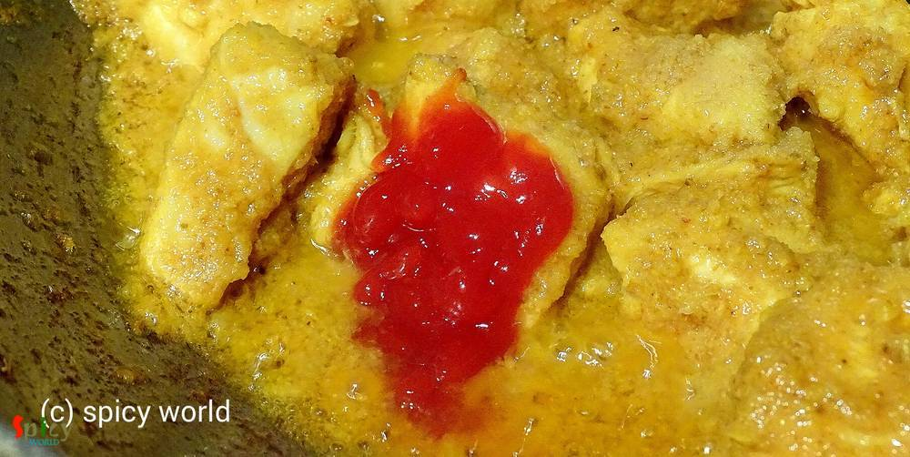

Simple and Easy Recipes
Sukha Chicken (Dry Chicken Curry)
© 2016 Spicy World, Published on: Nov 13, 2015
I always try new recipes on chicken because it is my family's favourite. Last Friday 'he' wanted to eat any dry preparation at dinner and told me 1 and half hour ago from dinner time. As I had not much time in hand, so, I thought how about marinate everything with chicken pieces and cook it. It took very less time and the taste turned out phenomenal. Believe me the end result was beyond my imagination. You have to try this in your kitchen and let me know how it turns out.
")
Ingredients
- 10-15 boneless chicken pieces.
- half onion.
- 1 inch ginger.
- 2 cloves of garlic.
- 2 green chilies.
- 1 dry red chilli.
- 1 Teaspoon lemon juice.
- 2 Teaspoons tomato ketchup.
- Some onion chunks cut into cubes.
- Spice powder (1 Teaspoon turmeric powder, half Teaspoon kashmiri red chilli powder, 1 Teaspoon roasted cumin and coriander powder).
- 6 Teaspoons mustard oil.
- Salt and sugar.
- Some chopped coriander leaves.
- Warm water.
Steps
Blend the onion, ginger, garlic and dry red chilli with some water in a blender. Make a fine paste.
Put the paste in a bowl. Add all the spice powder and some salt.
Now add the chicken pieces and lemon juice. Mix it well. Keep it in refrigarator for 1 hour.
Heat 1 Teaspoon oil in a pan. Add the onion chunks. Fry it in high flame for 3-4 minutes. Then remove it from the pan.
After 1 hour heat mustard oil in a kadai.
Add the marinated chicken in hot oil. Mix it in high flame for 10 minutes.
Then add tomato ketchup. Mix it.
When the oil starts separating add the green chilies, salt and pinch of sugar. Mix it again.
Then add some warm water. Cook this until the chicken is fully cooked.
Do not make too much gravy. Add those fried onion chunks and coriander leaves. Mix it for 2 minutes and turn off the heat.
Your sukha chicken is ready ...
Enjoy this hot with plain rice, roti or paratha.
 (Final)")